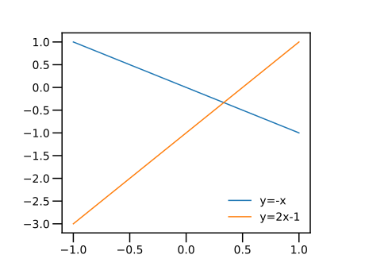
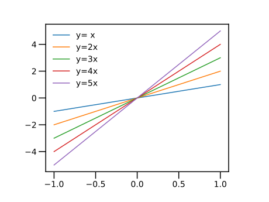
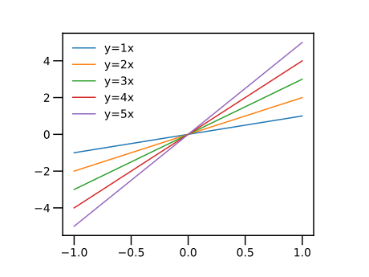
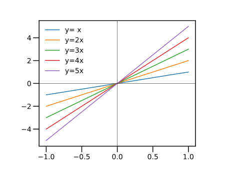
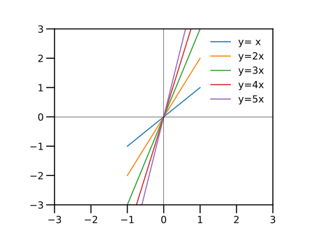
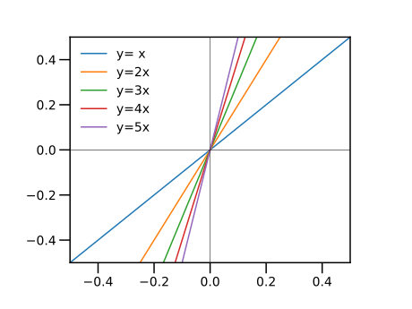
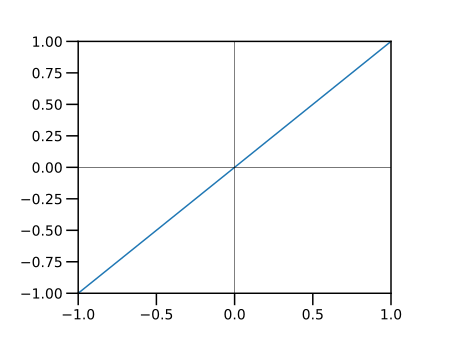

第2回：▼ 複数のグラフを描く
■ リテラル
リテラル (literal) とは、 「文字の並び」の通りに解釈される量をいう。
1 や 1.1 はリテラルである。 それぞれ、整数 1, 小数1.1 という値として評価されるからである。
■ 文字列
「文字の並び」として表される量が、文字列である。 文字列のリテラルは、ダブルクォート " で囲まれた文字の並びである。
julia> "Hello world"
"Hello world"文字列を連結するには、演算子 * を用いる。
julia> h="Hello"
"Hello"
julia> w="world"
"world"
julia> h*w
"Helloworld"
julia> h*" "*w
"Hello world"演算子 * は、数同士に対して用いると乗算の意味になる。文字列同士に用いると文字列の連結の意味になる。このように、同じ演算子 * に対して、複数の意味があり、作用する値の方に応じて、適切な意味が選ばれて、計算される。
数字を表す文字列を作るには、string関数を用いる。
julia> string(0)
"0"
julia> string(1)
"1"
julia> string(1.1)
"1.1"■ for文
Repeated Evaluation: Loops (section)
一つずつ要素を取り出すことができる量を、コレクションという。 ベクトルやRangeは、コレクションである。
for文を用いると、コレクションから要素を一つづつ取り出して、 end文が出現するまでの文を繰り返して、計算を行うことができる。 この繰り返される部分をブロック(block)という。 ブロックは、字下げ (indent) で表記される。 が、字下げは見やすさのためだけである。
繰り返しをループ（loop）ともいう。
ブロックは、for文以外にも出現する (例えば、 ■ if文 )。 区別したいなら forブロックとも称する。
次の例では、変数 iに、ベクトルの各要素を入れて、end文までの計算を繰り返す。 コレクションの各要素が入る変数をループ変数 (loop variable)という。
julia> for i in [1,3,2]
@show i # 式 i の値を表示する
end
i = 1
i = 3
i = 2@show i は、式 i の値を表示するマクロである。
Range型を用いた for文の例を示す。
julia> for i in 1:5
println( string(i) )
end
1
2
3
4
5string関数の結果を表示する。 println 関数は、印字してから、改行する命令である。
▼ グラフに凡例を加える
グラフの凡例(lengend)は、グラフに描かれた曲線を区別するための説明である。 PyPlotパッケージで書かれたグラフに凡例を追加するには、以下のようにする。
まず、plot関数に label=文字列 の形式で、 その曲線に付与する文字列を指定する。 全ての曲線を描いた後に、legend関数を実行すると、グラフに凡例が追加される。
using PyPlot
xs=-1:0.1:1
plt.plot(xs,-1*xs, label="y=-x")
plt.plot(xs,2*xs.-1, label="y=2x-1")
plt.legend()
比例関係 $y = ax$ ($a=1,2,3,4,5$)のグラフを描こう。
using PyPlot
xs=-1:0.1:1
plt.plot(xs, xs, label="y= x" )
plt.plot(xs, 2*xs, label="y=2x" )
plt.plot(xs, 3*xs, label="y=3x" )
plt.plot(xs, 4*xs, label="y=4x" )
plt.plot(xs, 5*xs, label="y=5x" )
plt.legend()
上のプログラムを、for文を用いて繰り返しで書き直してみよう。
次の例の for文では、 ループ変数 aに、1, 2, 3, 4, 5 の値が順番に入って、end までの文が実行される。 すなわち、直前のプログラムと同等である。
using PyPlot
xs=-1:0.1:1
for a in 1:5
plt.plot(xs, a*xs, label="y="*string(a)*"x" )
end
plt.legend()
▼ グラフに、水平線・垂直線を加える
は全て原点 $(0,0)$ を通る。 水平線や垂直線の補助線を引いて、これを見やすくする。
PyPlotパッケージに用意された関数 axhline(y) は、 縦座標 $y$ で水平線(horizontal line)を描く。 最初の引数には、水平線を引く $y$ 座標を指定する。 キーワード引数 color="k" は、黒色(black)で描くことを指定し、lw=0.5は線幅(linewidth)を指定する。
また、関数 axvline(x) は、横座標 $x$ で垂直線 (vertical line)を描く。 最初の引数には、垂直線を引く $x$ 座標を指定する。
using PyPlot
xs=-1:0.1:1
for a in 1:5
plt.plot(xs, a*xs, label="y="*string(a)*"x" )
end
plt.legend()
# 水平線 y=0
plt.axhline(0, color="k", lw=0.5)
# 垂直線 x=0
plt.axvline(0, color="k", lw=0.5)
▼ グラフの描画範囲を指定する
plot命令は、全ての点を表示しようとする。 グラフの描画範囲を調整するには、関数 xlim と ylim を用いる。
- 関数
xlim(a,b)は、x軸の描画を a から b の範囲に限定する。 - 関数
ylim(a,b)は、y軸の描画を a から b の範囲に限定する。
using PyPlot
xs=-10:0.5:10
for a in 1:5
plt.plot(xs, a*xs, label="y="*string(a)*"x" )
end
plt.legend()
plt.axhline(0, color="k", lw=0.5)
plt.axvline(0, color="k", lw=0.5)
# 描画範囲
plt.xlim(-3,3)
plt.ylim(-3,3)
別の描画範囲を指定してみる。
using PyPlot
xs=-10:0.5:10
for a in 1:5
plt.plot(xs, a*xs, label="y="*string(a)*"x" )
end
plt.legend()
plt.axhline(0, color="k", lw=0.5)
plt.axvline(0, color="k", lw=0.5)
# 描画範囲
plt.xlim(-20,20)
plt.ylim(-40,40)
▼ グラフの描画範囲を指定する
グラフの縦横の長さの比をアスペクト比という。
関数 plt.axes().set_aspect() は、アスペクト比を指定する命令である。
何も指定しない場合は、plt.axes().set_aspect("auto") であり、 アスペクト比を適当に調整する。
関数 plt.axes().set_aspect("equal") は、アスペクト比を等しくする命令である。 通常は、前項の描画範囲の指定と同時に用いる。
using PyPlot
xs=-1:0.2:1
plt.plot(xs, xs)
plt.xlim(-1,1)
plt.ylim(-1,1)
▼ 冪乗関数を描く
x^y は、冪（べき, power）ないし冪乗（べきじょう）$x^y$を表す。 $x$ を底 (base)、$y$ を冪指数 (exponent)という。
julia> 2^2
4
julia> 2^3
8
julia> 2^4
16スカラーとベクトルとに演算子 .^ を適用すると、 各々の冪指数に対して冪乗を計算したベクトルが得られる。
底が整数の場合は .^ の前に空白を入れる。
julia> 2 .^[2,3,4]
3-element Array{Int64,1}:
4
8
16整数(底)の直後に .^ と書くと例外が出るので注意しよう。
julia> 2.^[2,3,4]
ERROR: syntax: invalid syntax "2.^"; add space(s) to clarify底が小数の場合は、その直後に .^ と書いてよい。
julia> 2.0.^[2,3,4]
3-element Array{Float64,1}:
4.0
8.0
16.0ベクトルとスカラーとに演算子 .^ を適用すると、 各々の底に対して、冪乗を計算したベクトルが得られる。
julia> [2,3,4].^2
3-element Array{Int64,1}:
4
9
16
julia> [2,3,4].^2
3-element Array{Int64,1}:
4
9
16Range型とスカラーとに演算子 .^ を適用すると、 各々の底に対して、冪乗を計算したベクトルが得られる。
julia> (2:4).^2
3-element Array{Int64,1}:
4
9
16
julia> 2:4 .^2 # `^`は `:` よりも優先度が高い
2:16区間 $x= [0,1]$ で、冪乗 $y=x^a, (a=2,3,4,5)$ のグラフを描こう。
plt.axes().set_aspect("equal") は、 グラフの縦横比 (アスペクト比 aspect ratio) を等しくする命令である。
using PyPlot
plt.axes().set_aspect("equal")
xs=0:0.1:1
plt.plot(xs, xs.^2 )
plt.plot(xs, xs.^3 )
plt.plot(xs, xs.^4 )
plt.plot(xs, xs.^5 )for文を使って、繰り返しの処理をまとめる。 区間を $x= [0,2]$ に拡大して、凡例を追加しよう。
using PyPlot
plt.axes().set_aspect("equal")
xs=0:0.05:2
for a in 2:5
plt.plot(xs, xs.^a , label="y=x^"*string(a) )
end
plt.legend()
# 描画範囲を設定
plt.xlim(-0.05,2)
plt.ylim(-0.05,2)冪乗 $y=x^a, (a=2,3,4,5)$ は全て、点 $(1,1)$ を通る。$x=1$と $y=1$ の線を付与して、これを見やすくしよう。
using PyPlot
plt.axes().set_aspect("equal")
# 間隔を狭めた
xs=0:0.05:2
for a in 2:5
plt.plot(xs, xs.^a , label="y=x^"*string(a) )
end
plt.legend()
# 描画範囲を設定
plt.xlim(-0.05,2)
plt.ylim(-0.05,2)
# 水平線 y=1
plt.axhline(1, color="k", lw=0.5)
# 垂直線 x=1
plt.axvline(1, color="k", lw=0.5)
#■ ベクトルの要素の加減算
ベクトルとベクトルとに演算子 .+ や .- を作用させると、 対応する要素同士を加減算した要素を持つベクトルが得られる。
julia> xs = [1,2,2,1]
4-element Array{Int64,1}:
1
2
2
1
julia> ys = [1,1,3,1]
4-element Array{Int64,1}:
1
1
3
1
julia> xs .+ ys
4-element Array{Int64,1}:
2
3
5
2
julia> xs .- ys
4-element Array{Int64,1}:
0
1
-1
0■ ベクトルとRange型との加減算
Range型とベクトルとに演算子 .+ や .- を作用させると、 Range型とベクトルとの寸法 (要素の数)が等しいなら、 対応する要素同士を加減算した要素を持つベクトルが得られる。 ベクトルとRange型に演算子 .+ や .- を作用させても同様である。 要素の数が異なると、例外 (exception, エラー)となる。
julia> xs = 1:1:5
1:1:5
julia> ys = [11, 13, 15, 17, 19]
5-element Array{Int64,1}:
11
13
15
17
19
julia> xs .+ ys
5-element Array{Int64,1}:
12
15
18
21
24
julia> ys .- xs
5-element Array{Int64,1}:
10
11
12
13
14Range型をベクトルに変換してしまうと、元が等差数列であるという情報が欠落する。どうしても、ベクトルでないと困る場合だけ、ベクトルに変換しよう。
▼ ローレンツ関数を描く
以下の曲線を、 ローレンツ関数 (Lorentzian function)という。
パラメータを $x_0 = 0, \gamma = 2$ のように選ぶと、 以下のように簡単な形となる。
まず、この曲線を描いてみる。
Range型の各要素に対して加算や除算を行うため、1 / (xs.^2 +1) では駄目である。/ と + のの前にピリオド . を付与する。
julia> xs=-3:0.5:3
-3.0:0.5:3.0
julia> 1 ./ (xs.^2 .+1)
13-element Array{Float64,1}:
0.1
0.13793103448275862
0.2
0.3076923076923077
0.5
0.8
1.0
0.8
0.5
0.3076923076923077
0.2
0.13793103448275862
0.1上のグラフを描こう。
using PyPlot
xs=-3:0.1:3
plt.plot(xs, 1 ./ (xs.^2 .+1) )
以下のように、パラメータ $\gamma$ を追加する。
三つのパラメータ $\gamma=0.5,1,2$ について、この曲線を描く。
using PyPlot
xs=-3:0.05:3
gamma=0.5
plt.plot(xs, (gamma/2) ./ (xs.^2 .+(gamma/2)^2), label=gamma )
gamma=1.0
plt.plot(xs, (gamma/2) ./ (xs.^2 .+(gamma/2)^2), label=gamma )
gamma=2.0
plt.plot(xs, (gamma/2) ./ (xs.^2 .+(gamma/2)^2), label=gamma )
plt.legend()
gammaの値が変わっても、それぞれの曲線を描くための命令は変わらない。 for文を用いて、gammaの値を変えてみよう（結果のグラフは変わらないので、省略する)。
using PyPlot
xs=-3:0.05:3
for gamma in [0.5,1.0,2.0]
plt.plot(xs, (gamma/2) ./ (xs.^2 .+(gamma/2)^2), label=gamma )
end
plt.legend()ローレンツ関数には、次の性質がある。
- 点 $x=0$ で 最大値 $y = \frac{2}{\gamma}$
- 点 $x=\pm\frac{\gamma}{2}$ で、$y = \frac{1}{2}\frac{2}{\gamma}$ となること。
２つ目の性質を観察するため、最大値に対する比を描いてみる。
using PyPlot
xs=-3:0.05:3
for gamma in [0.5,1.0,2.0]
plt.plot(xs,
(gamma/2) ./ (xs.^2 .+(gamma/2)^2) / (2/gamma),
label=gamma )
end
plt.legend()
plt.axhline(1/2, color="k", lw=0.5)plot関数の文は、複数の行に渡って記述しているが、行が更に続くことを示す記法は、特に用意されていない。構文が行末で終わらなければ、次の行まで読みに行くことになっている。
パラメータ $\gamma$は、半値全幅 (Full Width of Half Maximum, FWHM)と呼ばれる。 $\gamma$を非常に小さくすると、 Diracのデルタ関数 (Dirac delta function)の近似(の一つ)となる。
■ 更新演算子
変数に四則演算などを行って、元の変数に再代入する場合には、 更新演算子を用いるとよい。 演算子の直後に = の文字が入る。
julia> x=1
1
julia> # 再代入
x=x+1
2
julia> # 更新演算子
x+=1
3演算子 +, -, *, /, ^ に対して、 更新演算子 +=, -=, *=, /=, ^= が用意されている。
以下の例は、変数 gamma を 2 で繰り返し割り算する。
julia> gamma=2
2
julia> for i=1:5
global gamma
gamma /= 2
@show gamma
end
gamma = 1.0
gamma = 0.5
gamma = 0.25
gamma = 0.125
gamma = 0.0625更新演算子 /= を利用して、ローレンツ関数のパラメータ gamma を変えてみる。
for文の次の global gamma に注目してほしい。 対話型で実行する場合、for文の外側で定義された変数の値を変更することは、 安全のために通常禁止されている。これを可能とするのが global 文である。
using PyPlot
xs=-3:0.05:3
gamma=2
for i in 1:5
global gamma
plt.plot(xs,
(gamma/2) ./ (xs.^2 .+(gamma/2)^2) / (2/gamma),
label=gamma )
gamma /= 2
end
plt.legend()
axhline(1/2, color="k", lw=0.5)ベクトルをスカラー倍して更新するには、更新演算子 *= を用いる。 ベクトルにスカラーを加減して更新するには、更新演算子 .+=または .-= を用いる。
julia> xs = [1,2,2,1]
4-element Array{Int64,1}:
1
2
2
1
julia> xs .+=1
4-element Array{Int64,1}:
2
3
3
2
julia> xs *= 2
4-element Array{Int64,1}:
4
6
6
4前節の三角形を描く例題で、更新演算子 .+= を用いて、図形を繰り返し並行移動してみよう。
for 文の中で、変数 xs と ys を更新するので、global xs, ys の文が必要である。
using PyPlot
plt.axes().set_aspect("equal")
xs = [1.0,2.0,2.0,1.0 ]
ys = [1.0,1.0,3.0,1.0 ]
for i=1:5
global xs, ys
plt.plot(xs,ys)
xs .+= 0.5
ys .+= 0.5
end
plt.xlim(0,6)
plt.ylim(0,6)
▲ 練習
ローレンツ関数において、パラメータ $x_0$ を変えたグラフを作成せよ。 for文を使う方法、更新演算子を使う方法の、二つで描いてみよ。
★ 今回のまとめ
- 文字列
- for文
- グラフに凡例を加える
- 冪乗関数
- ローレンツ関数
- 更新演算子